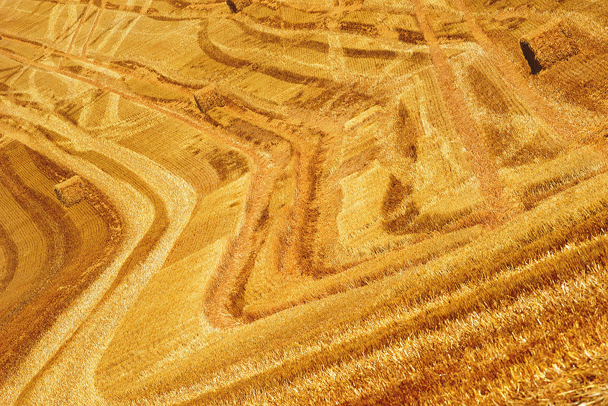
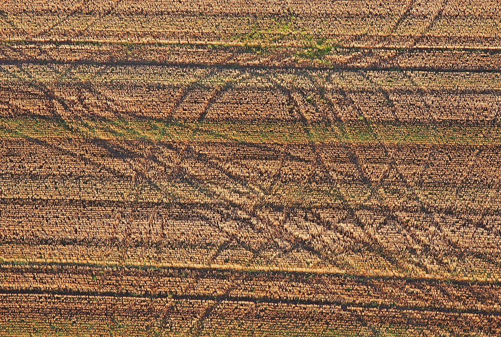

The economics of the status quo are shifting
Four pressures are converging on commercial farming. None of them is temporary, and each compounds the others.
Rising input costs
Chemical programmes cost more every season, and reactive spending compounds: when the response to each new problem is another purchased input, the cost curve only bends one way.
Declining soil health
Degraded soil function increases dependence on inputs, which further degrades soil function. Farms that break this cycle stop paying for it; farms that don't, keep paying more.
Tightening export & regulatory expectations
Buyers and export markets increasingly expect demonstrated residue management and credible environmental performance — and the direction of those expectations is one-way.
Market expectations for evidence
Claims are no longer enough. Verifiable practice — measured, documented, auditable — is becoming a condition of premium market access rather than a differentiator.
Pressure without a pathway
Growers see these pressures clearly. What they lack is a practical, tested pathway for moving away from highly hazardous pesticides without compromising quality or productivity.
Advice tends to arrive as theory, ideology, or product marketing. What a commercial farm needs is a transition process that respects its economics: tested on real parcels, measured against its own baseline, with expert support and a safety net while new practices bed in.


Not a cliff edge — a direction the sector is heading
The shift away from highly hazardous inputs isn't driven by any single rule or deadline. It's driven by cost pressure, soil decline, and what markets are willing to buy. For a commercial farm, the question is not whether to build transition capability — it's how to build it without betting the farm.
That is exactly the problem the parcel model is designed to solve.